Instal·lació d'una màquina virtual amb el sistema operatiu Debian 12.5
En aquest laboratori, instal·larem el sistema operatiu Debian 12 en una màquina virtual i descriurem els components principals del sistema operatiu. Aquesta instal·lació és la base per a tots els laboratoris que realitzarem en aquest curs. En alguns, us demanaré que modifiqueu alguns paràmetres de configuració per adaptar-los a les necessitats del laboratori.
Configuració de la màquina virtual amb VMWare
- Selecciona l’opció
Create a New Virtual Machinea VMWare Workstation Player o VMWare Fusion. - Selecciona Install from disc or image.

- Selecciona la imatge ISO de Debian 12.

- Configura els recursos de la màquina virtual.
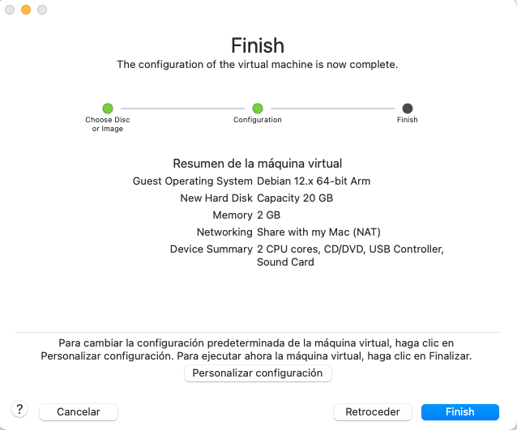
Instal·lació del sistema operatiu
-
Un cop iniciada la màquina virtual, podeu seleccionar la opció Install o bé Graphical install.

En aquest tutoriral, seleccionarem la opció Graphical install per a una instal·lació més amigable. La principal diferència entre les dues opcions és l'entorn gràfic.
-
Selecciona l'idioma d'instal·lació.
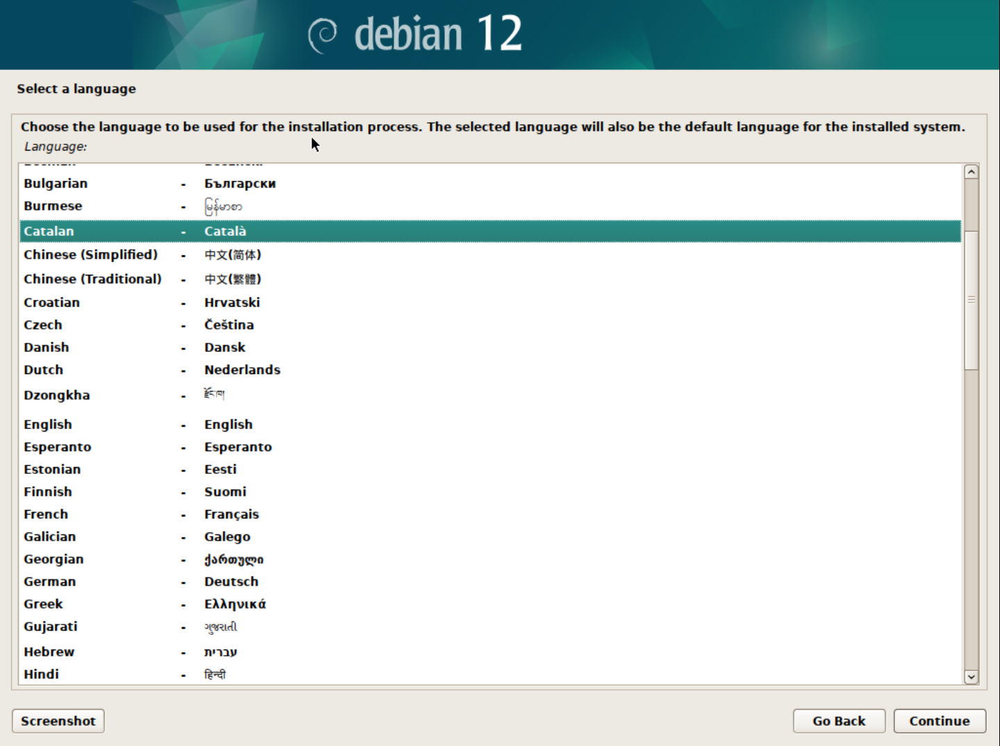
Podeu seleccionar l'idioma que vulgueu per a la instal·lació. En aquest cas, seleccionarem l'idioma Català.
-
Selecciona la ubicació geogràfica.

En aquest cas, seleccionarem la ubicació Espanya.
-
Selecciona la disposició del teclat.

En aquest cas, seleccionarem la disposició de teclat Català. Això ens asegurarà un mapeig correcte del teclat.
-
Espereu que el sistema carregui els components necessaris.

-
Configura la xarxa.
- El primer pas és configurar el nom d'amfitrió o hostname. Aquest nom permet identificar de forma única el vostre sistema. Podeu deixar el nom per defecte o canviar-lo al vostre gust.
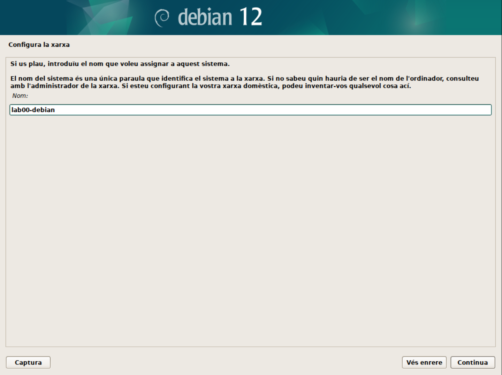
En aquest cas, hem canviat el nom d'amfitrió a
lab00-debian.🚀 Consell:
Els administradors de sistemes acostumen a administrar múltiples servidors i dispositius. Per tant, és important identificar cada dispositiu amb un nom únic per facilitar la gestió i la comunicació entre ells. Per tant, us recomano que utilitzeu un nom d'amfitrió significatiu per identificar-lo fàcilment.
Us recomano un cop instal·lat el sistema que doneu una ullada a l'apartat Hostname per obtenir més informació sobre com gestionar el nom d'amfitrió.
- El segon pas és configurar el domini de la xarxa. Aquest pas el podeu deixar en blanc si no teniu un domini específic. O bé, podem utilitzar
.localcom a domini local per identicar que el servidor pertany a la xarxa local.

💡 Nota:
En un domini empresarial, normalment s'utilitza el nom de domini de l'empresa. Imagina que aquesta màquina virtual és el servidor d'una base de dades mysql de l'empresa
acme.com. En aquest cas, el domini seriaacme.com. I el nom d'amfitrió podria sermysql01.acme.com. -
Configura l'usuari administrador.
En aquest punt, heu de tenir en compte que si no poseu cap contrasenya, es crearà l'usuari normal amb permisos de
sudoi això us permetra executar comandes amb privilegis d'administrador. -
Configura un usuari normal.
- Nom complet: Podeu posar el vostre nom complet o el que vulgueu.
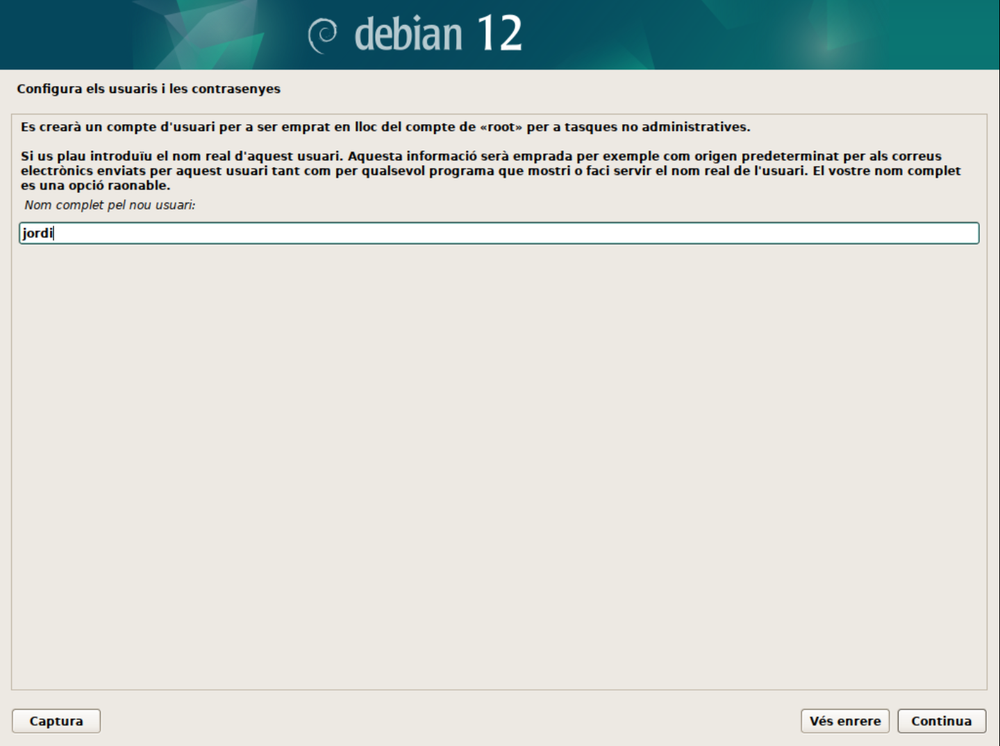
- Nom d'usuari: Podeu posar el vostre nom d'usuari o el que vulgueu.

- Contrasenya: El mateix que per l'usuari
root.
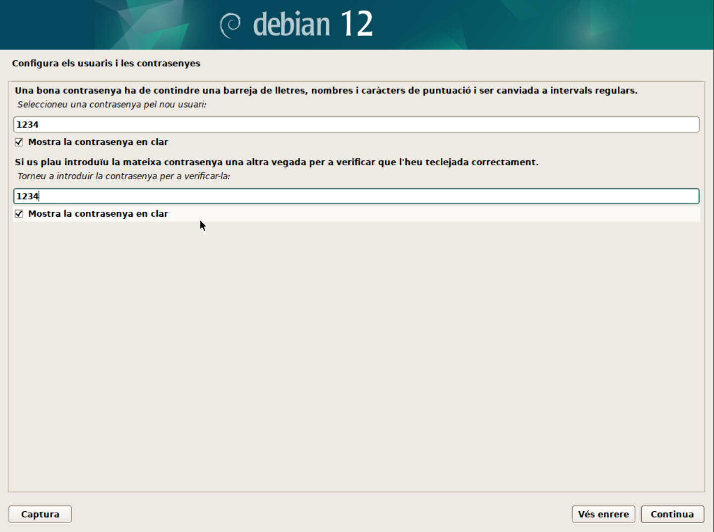
-
Configura la zona horària.
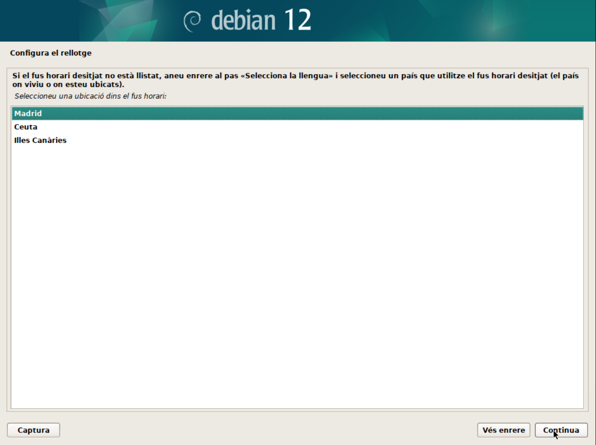
En aquest cas, seleccionarem la zona horària de Madrid.
-
Configura el disc dur.
- Particionament: Durant el curs apendreu a realitzar particionament manual i, també discutirem sobre LV (Logical Volumes) i LVM (Logical Volume Manager). Però, per a una instal·lació senzilla, de moment, seleccionarem la primera opció (Guiat - utilitzar tot el disc).
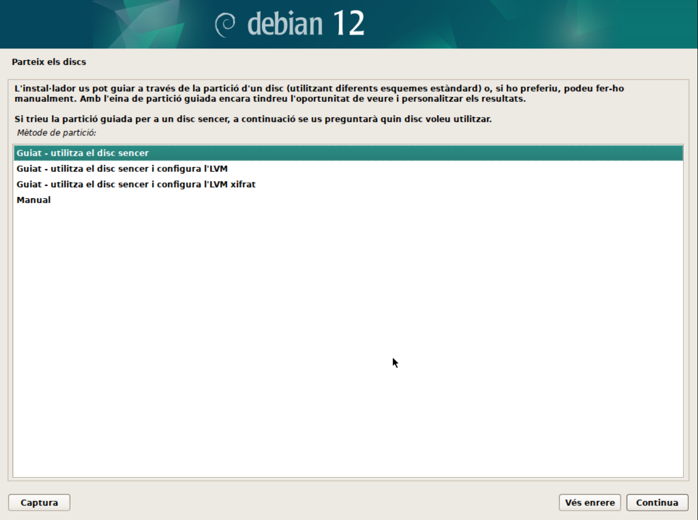
- Selecciona el disc on instal·lar el sistema. En el meu cas, només tinc un disc virtual amb l'etiqueta
/dev/nvme0n1. L'etiqueta indica el tipus de disc (NVMe) i el número de disc (1). Es possible tenir altres etiquetes com/dev/sdaper discos SATA o/dev/vdaper discos virtuals.
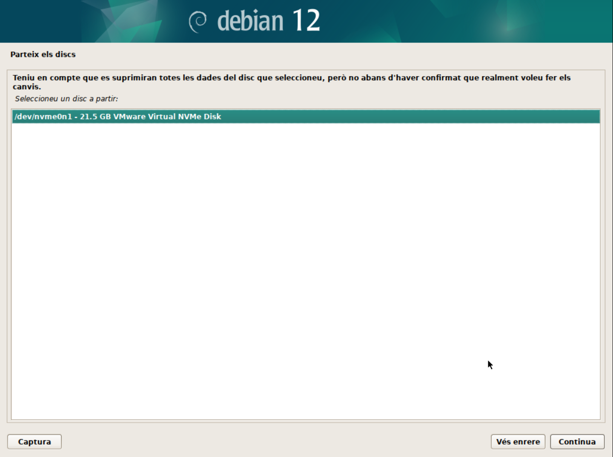
- Particions: Durant el curs apendreu les avantatges i com gestionar sistemes amb particions separades. Però, de moment, seleccionarem la primera opció (Totes les dades en una sola partició).
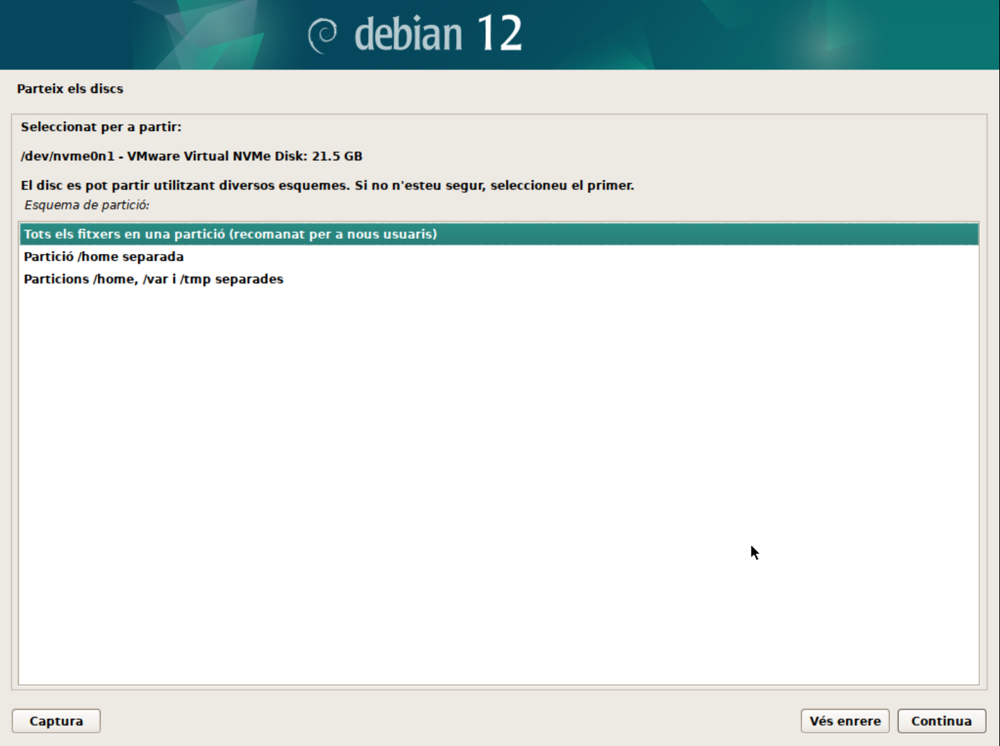
- Confirmeu els canvis. En aquest punt, el sistema crearà les particions necessàries:
- La primera partició serà la partició
/booton es guardaran els fitxers de boot. - La segona partició serà la partició
/on es guardaran els fitxers del sistema. - La tercera partició serà la partició de swap on es guardaran les dades de la memòria virtual.
- La primera partició serà la partició
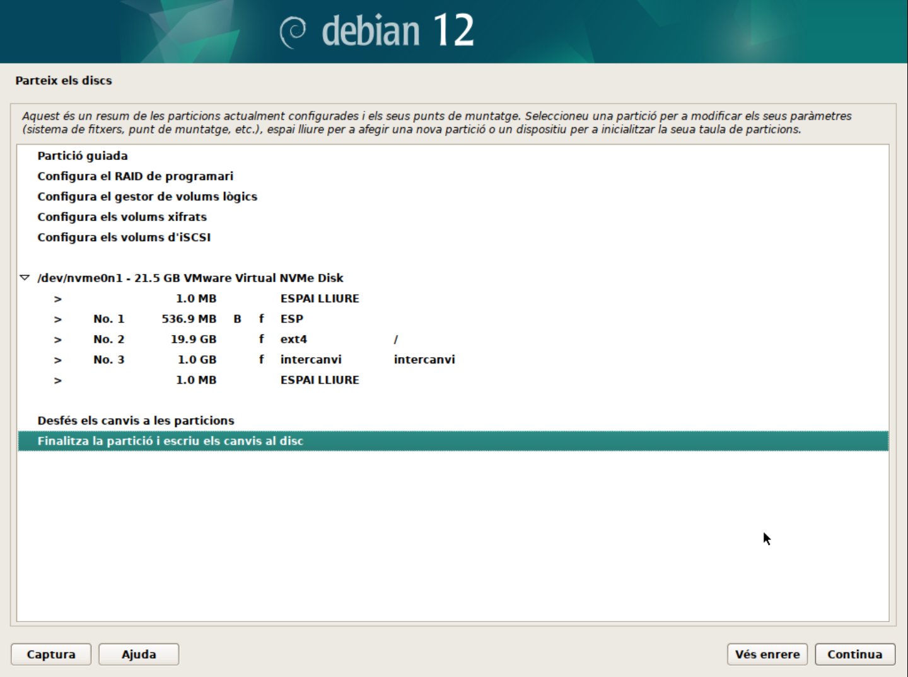
👁️ Observació:
En aquest punt es poden fer moltes personalitzacions com ara:
- Configurar un sistema RAID.
- Configurar un sistema LVM. Ho veurem més endavant en el curs.
- Escriu els canvis al disc.

-
Espera que s'instal·li el sistema.

-
Configura el gestor de paquets.
- Analitzar els discos de la instal·lació. Aquest pas permet seleccionar els discos on es troben els paquets d'instal·lació. Normalment, aquest pas no cal modificar-lo.

-
Configura el gestor de paquets. En aquest cas, seleccionarem el servidor de paquets més proper a la nostra ubicació.
-
Filtrar els servidors de paquets per ubicació.

-
Seleccionar el servidor de paquets.

👀 Nota:
A vegades, els servidors de paquets poden estar saturats o no funcionar correctament. En aquest cas, podeu seleccionar un servidor alternatiu o provar més tard.
-
-
Configura el proxy. Si esteu darrere d'un proxy, podeu configurar-lo en aquest pas.

ℹ️ Què és un proxy?
Un proxy és un servidor intermediari entre el vostre sistema i Internet. Aquest servidor pot ser utilitzat per controlar l'accés a Internet, per protegir la vostra privacitat o per accelerar la connexió a Internet. Les peticions de connexió a Internet es fan a través del servidor proxy, que actua com a intermediari i reenvia les peticions al servidor de destinació. Per exemple, en una empresa, el proxy pot ser utilitzat per controlar l'accés a Internet dels empleats i protegir la xarxa interna de possibles amenaces.
-
Espera que s'instal·lin els paquets.

-
Configura el paquet
popularity-contest.- Aquest paquet permet enviar informació anònima sobre els paquets instal·lats al servidor de Debian per millorar la selecció de paquets i la qualitat dels paquets. Podeu seleccionar si voleu participar en aquest programa o no.
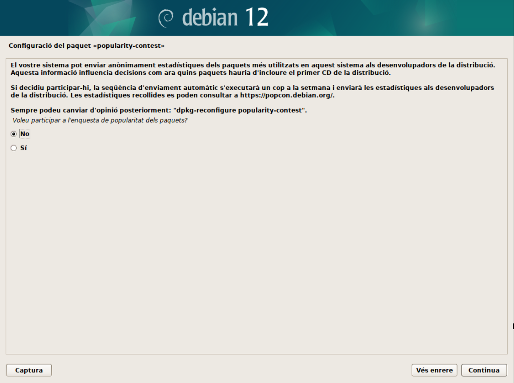
-
Selecció de programari. En aquest punt podeu seleccionar si voleu un servidor en mode text o amb interfície gràfica. També us permet seleccionar si voleu instal·lar els serveis web i ssh al servidor i finalment si voleu les utilitats estàndard del sistema. Aquestes opcions les anirem modifciant en funció dels laboratoris que realitzarem. Per defecte, seleccionarem el servidor en mode text, el servei SSH activat i les utilitats estàndard del sistema.

ℹ️ Què és un servidor en mode text?
Un servidor en mode text és un servidor que no té una interfície gràfica. Això significa que tota la interacció amb el servidor es fa a través de la línia de comandes. Aquest tipus de servidor és molt comú en entorns de producció, ja que consumeix menys recursos i és més segur que un servidor amb interfície gràfica.
ℹ️ Què és el servei SSH?
El servei SSH (Secure Shell) és un protocol de xifratament que permet connectar-se de forma segura a un servidor remot. Aquest servei és molt utilitzat per administrar servidors a distància, ja que permet accedir al servidor de forma segura i xifratada.
-
Espera que s'instal·li el programari.

-
Instal·lació acabada. Un cop finalitzada la instal·lació, el sistema es reiniciarà i podreu accedir al GRUB per seleccionar el sistema operatiu.
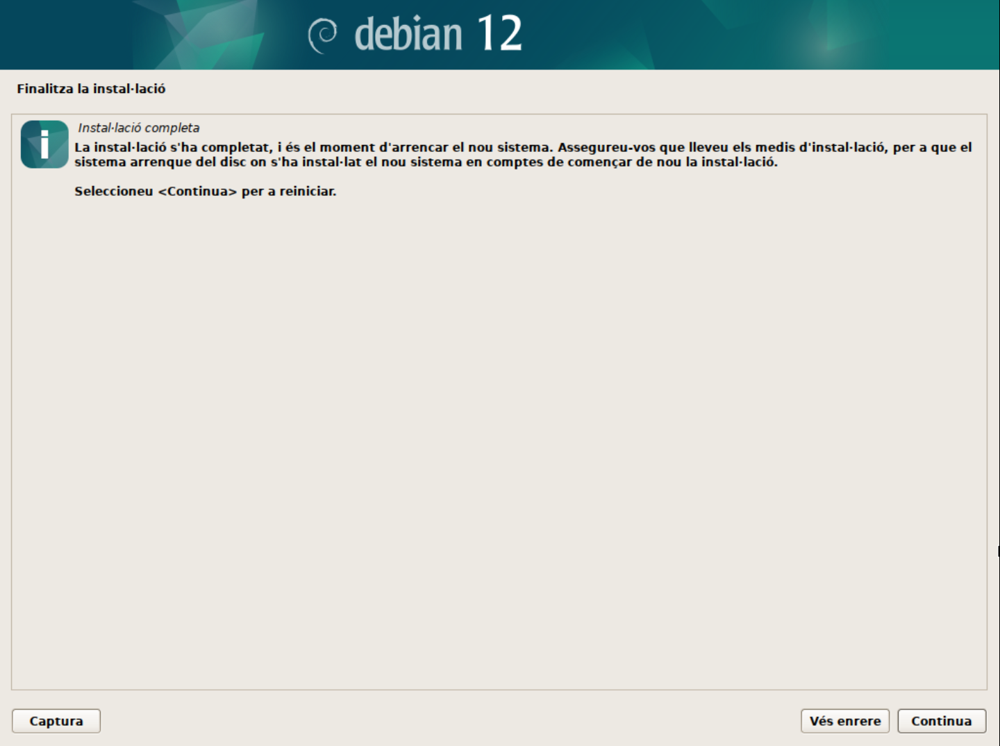
-
El GRUB us permet accedir al sistema operatiu. En aquest cas, seleccionarem Debian GNU/Linux. La resta d'opcions les veurem més endavant en el curs.

ℹ️ Què és el GRUB?
Com veurem al capítol de Booting, el GRUB és un gestor d'arrencada que permet seleccionar el sistema operatiu que volem iniciar. Aquest gestor és molt útil en sistemes amb múltiples sistemes operatius o múltiples versions del mateix sistema operatiu.
-
Inicieu sessió amb l'usuari i la contrasenya que heu configurat durant la instal·lació.
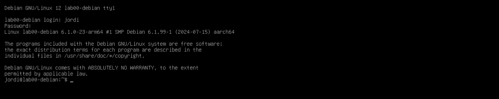
-
Tanqueu la sessió amb la comanda
exit. -
Inicieu sessió amb l'usuari
rooti la contrasenya que heu configurat durant la instal·lació.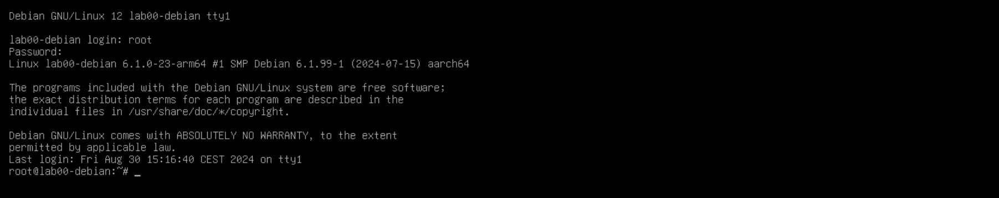